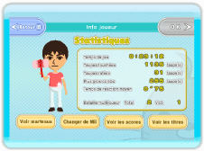
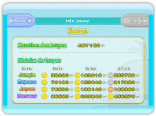
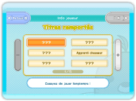

Voir les statistiques
Sélectionnez "Info joueur" à partir de l'écran de choix du mode pour voir un écran de statistiques.

Voir les scores
Sélectionnez "Voir les scores" à l'écran des statistiques pour afficher la liste de vos scores.
Le bouton "Retour" permet de revenir à l'écran des statistiques.

Voir les titres
Sélectionnez "Voir les titres" à l'écran des statistiques pour afficher la liste de vos titres.
Sélectionnez un titre pour voir comment vous l'avez remporté. Si vous ne l'avez pas encore remporté, vous verrez un indice le concernant.
Le bouton "Retour" permet de revenir à l'écran des statistiques.
Changer de Mii
Sélectionnez "Changer de Mii" à l'écran des statistiques pour jouer avec un autre Mii. Si vous utilisez un Mii par défaut, votre nom sera remplacé par "pas de nom" dans le classement de connexion Wi-Fi Nintendo.
Voir les marteaux
Sélectionnez "Voir les marteaux" à l'écran des statistiques pour contempler tous les marteaux à votre disposition.